EDA
Si Chen
2023-12-06
library(tidyr)
library(tidyverse)
library(rvest)
library(dplyr)
library(cowplot)
library(gridExtra)
library(RColorBrewer)
knitr::opts_chunk$set(
echo = TRUE,
warning = FALSE,
fig.width = 8,
fig.height = 6,
out.width = "90%"
)
theme_set(theme_minimal() + theme(legend.position = "bottom"))
options(
ggplot2.continuous.colour = "viridis",
ggplot2.continuous.fill = "viridis"
)
scale_colour_discrete = scale_colour_viridis_d
scale_fill_discrete = scale_fill_viridis_dLoad clean datasets
df_2013 =
read_csv("data/merge_data_2013.csv", show_col_types = FALSE)## New names:
## • `` -> `...1`df_2017 =
read_csv("data/merge_data_2017.csv", show_col_types = FALSE)## New names:
## • `` -> `...1`# Convert month to factor with levels in ascending order and labels as month abbreviations
df_2013$month <- factor(df_2013$month, levels = 1:12, labels = month.abb[1:12])Data set description
In the dataset for 2013, there are 20 columns and 72734 rows. In the dataset for 2017, there are 20 columns and 4785 rows.
There are 16 different carriers flying out of NYC airports. NYC has 3 different airports. There are 104 different destination locations to which flights fly out of NYC airports.
TBC…
Weather
Visualize association between weather variables? aggregate by date, plot scatter plot, add fitted line (instead of by month)?
# Aggregate the data by month and calculate averages
df_2013_avg <- df_2013 %>%
group_by(month) %>%
summarize(
avg_arr_delay = mean(arr_delay, na.rm = TRUE),
avg_precip = mean(precip, na.rm = TRUE),
avg_wind_dir = mean(wind_dir, na.rm = TRUE),
avg_wind_speed = mean(wind_speed, na.rm = TRUE),
avg_wind_gust = mean(wind_gust, na.rm = TRUE),
avg_pressure = mean(pressure, na.rm = TRUE),
avg_visib = mean(visib, na.rm = TRUE)
)Preciptation 2013
# Plot precipitation against arrival delay in a scatter plot
precip_delay =
ggplot(df_2013, aes(x = precip, y = arr_delay)) +
geom_point(alpha = 0.5, color = "skyblue") +
labs(title = "Scatter Plot of Precipitation against Arrival Delay",
x = "Precipitation (inches)",
y = "Arrival Delay (minutes)")# Average precip against average arr_delay by month
precip_delay_month =
ggplot(df_2013_avg, aes(x = avg_precip, y = avg_arr_delay, color = month)) +
geom_point(size = 3) +
geom_smooth(method = "lm", se = FALSE, color = "coral", size = 0.6) +
labs(title = "Scatter Plot of Precipitation against Arrival Delay",
x = "Precipitation (inches)",
y = "Arrival Delay (minutes)")# grid.arrange(precip_line_bar, precip_delay, nrow = 2)
# precip_violin
# precip_line
# precip_bar
summary(df_2013$precip)## Min. 1st Qu. Median Mean 3rd Qu. Max.
## 0.000000 0.000000 0.000000 0.001352 0.000000 0.530000precip_line_bar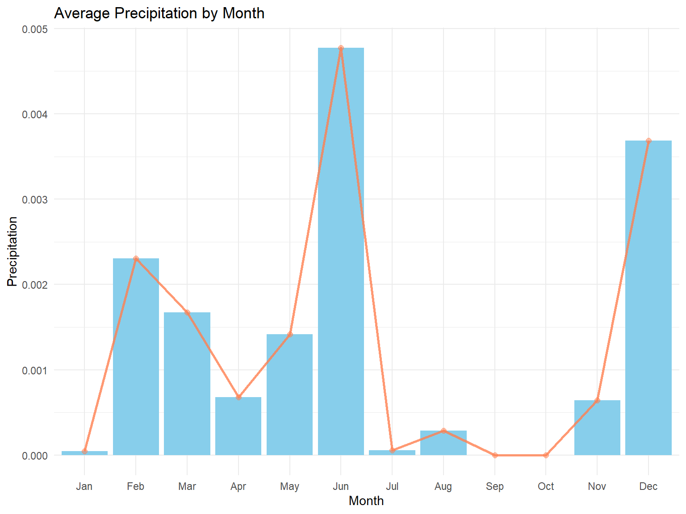
precip_delay
precip_delay_month## `geom_smooth()` using formula = 'y ~ x'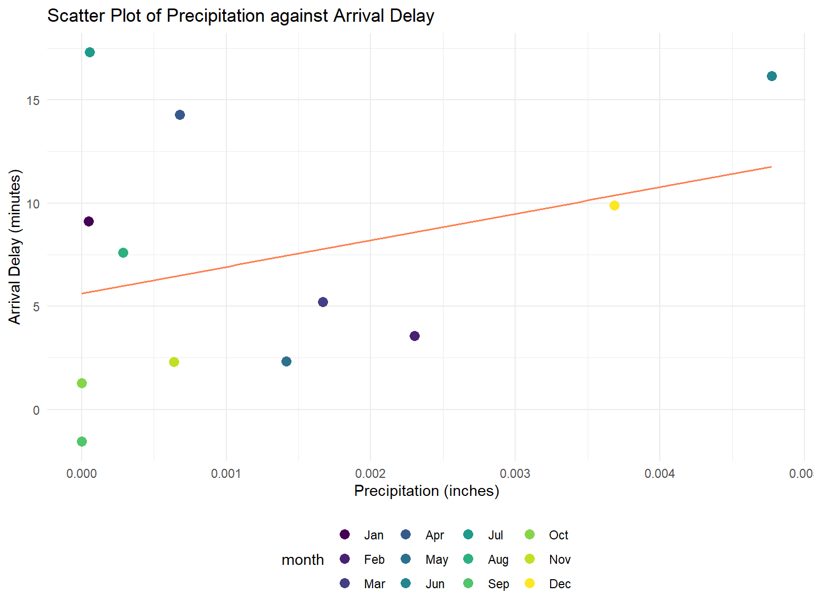
Pressure
# Plot average pressure by month in line plot
pressure_line =
ggplot(df_2013, aes(x = month, y = pressure)) +
#geom_bar(aes(x=month, y=pressure),stat="summary", fun = 'mean', fill="skyblue")+
geom_point(aes(x=month, y=pressure), stat = "summary", fun = "mean", color = "coral", alpha = .8) +
geom_line(aes(group = 1), stat="summary", fun = 'mean', color="skyblue", size=1, alpha = .8) +
labs(
title= "Average Pressure by Month",
x="Month",
y="Pressure")
# Plot Pressure against arrival delay in a scatter plot
pressure_delay =
ggplot(df_2013, aes(x = pressure, y = arr_delay)) +
geom_point(alpha = 0.5, color = "skyblue") +
labs(title = "Scatter Plot of Pressure against Arrival Delay",
x = "Pressure",
y = "Arrival Delay (minutes)")
# Average pressure against average arr_delay by month
pressure_delay_month =
ggplot(df_2013_avg, aes(x = avg_pressure, y = avg_arr_delay, color = month)) +
geom_point(size = 3) +
geom_smooth(method = "lm", se = FALSE, color = "coral", size = 0.6) +
labs(title = "Scatter Plot of Average Pressure against Arrival Delay by Month",
x = "Avg Monthly Pressure",
y = "Avg Arrival Delay (minutes)")summary(df_2013$pressure)## Min. 1st Qu. Median Mean 3rd Qu. Max.
## 983.8 1010.8 1015.4 1015.6 1020.4 1040.4pressure_line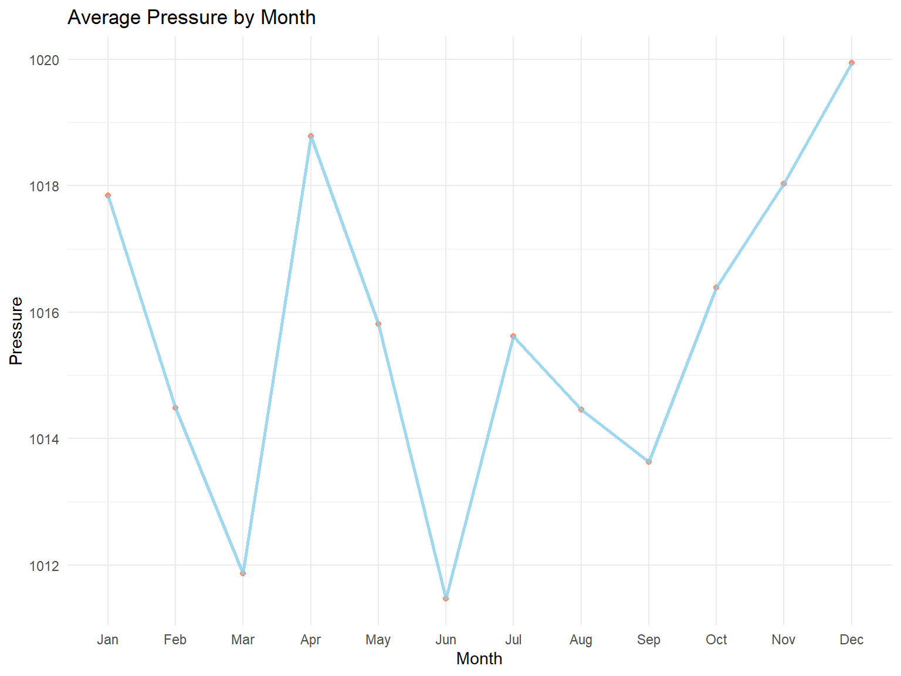
pressure_delaypressure_delay_month## `geom_smooth()` using formula = 'y ~ x'Visibility
# Plot average Visibility by month in line plot
visib_line =
ggplot(df_2013, aes(x = month, y = visib)) +
# geom_bar(aes(x=month, y=visib),stat="summary", fun = 'mean', fill="skyblue")+
geom_point(aes(x=month, y=visib), stat = "summary", fun = "mean", color = "coral") +
geom_line(aes(group = 1), stat="summary", fun = 'mean', color="skyblue", size=1, alpha = .8) +
labs(
title= "Average Visibility by Month",
x="Month",
y="Visibility")
# Plot Visibility against arrival delay in a scatter plot
visib_delay =
ggplot(df_2013, aes(x = visib, y = arr_delay)) +
geom_point(alpha = 0.5, color = "skyblue") +
labs(title = "Scatter Plot of Visibility against Arrival Delay",
x = "Visibility",
y = "Arrival Delay (minutes)")
# Average Visibility against average arr_delay by month
visib_delay_month =
ggplot(df_2013_avg, aes(x = avg_visib, y = avg_arr_delay, color = month)) +
geom_point(size = 3) +
geom_smooth(method = "lm", se = FALSE, color = "coral", size = 0.6) +
labs(title = "Scatter Plot of Average Visibility against Arrival Delay by Month",
x = "Avg Monthly Visibility",
y = "Avg Arrival Delay (minutes)")summary(df_2013$visib)## Min. 1st Qu. Median Mean 3rd Qu. Max.
## 0.120 10.000 10.000 9.803 10.000 10.000visib_linevisib_delay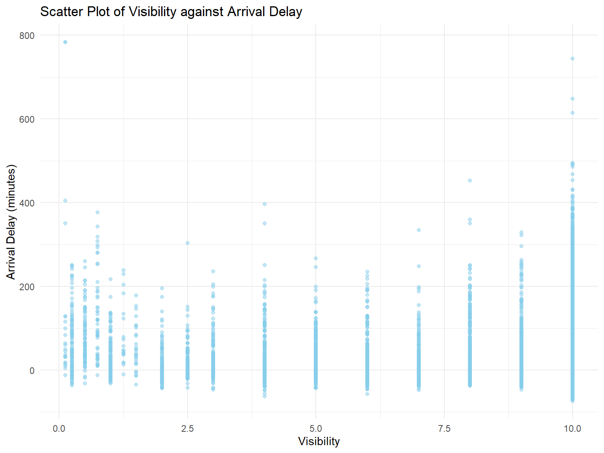
visib_delay_month## `geom_smooth()` using formula = 'y ~ x'Wind Direction
# Plot average wind_dir by month in line plot
wind_dir_line =
ggplot(df_2013, aes(x = month, y = wind_dir)) +
geom_bar(aes(x=month, y=wind_dir),stat="summary", fun = 'mean', fill="skyblue", alpha = .8)+
geom_point(aes(x=month, y=wind_dir), stat = "summary", fun = "mean", color = "red") +
geom_line(aes(group = 1), stat="summary", fun = 'mean', color="coral", size=1, alpha = .9) +
labs(
title= "Average Wind Direction by Month",
x="Month",
y="Wind Direction")
# Plot Wind Direction against arrival delay in a scatter plot
wind_dir_delay =
ggplot(df_2013, aes(x = wind_dir, y = arr_delay)) +
geom_point(alpha = 0.5, color = "skyblue") +
labs(title = "Scatter Plot of Wind Direction against Arrival Delay",
x = "Wind Direction",
y = "Arrival Delay (minutes)")
# Average Wind Direction against average arr_delay by month
wind_dir_delay_month =
ggplot(df_2013_avg, aes(x = avg_wind_dir, y = avg_arr_delay, color = month)) +
geom_point(size = 3) +
geom_smooth(method = "lm", se = FALSE, color = "coral", size = 0.6) +
labs(title = "Scatter Plot of Average Wind Direction against Arrival Delay by Month",
x = "Avg Monthly Wind Direction",
y = "Avg Arrival Delay (minutes)")summary(df_2013$wind_dir)## Min. 1st Qu. Median Mean 3rd Qu. Max.
## 10.0 220.0 280.0 253.9 310.0 360.0wind_dir_line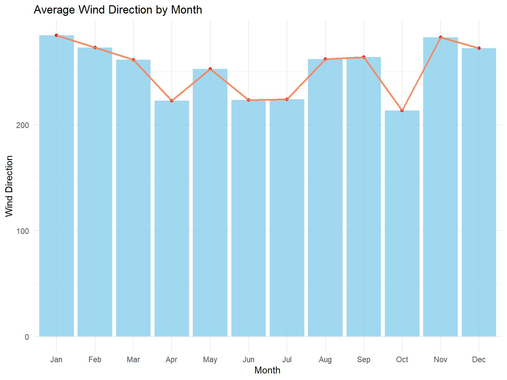
wind_dir_delay
wind_dir_delay_month## `geom_smooth()` using formula = 'y ~ x'Wind Speed
# Plot average wind_speed by month in line plot
wind_speed_line =
ggplot(df_2013, aes(x = month, y = wind_speed)) +
geom_bar(aes(x=month, y=wind_speed),stat="summary", fun = 'mean', fill="skyblue", alpha = .8)+
geom_point(aes(x=month, y=wind_speed), stat = "summary", fun = "mean", color = "red") +
geom_line(aes(group = 1), stat="summary", fun = 'mean', color="coral", size=1, alpha = .8) +
labs(
title= "Average Wind Speed by Month",
x="Month",
y="Wind Speed")
# Plot wind_speed against arrival delay in a scatter plot
wind_speed_delay =
ggplot(df_2013, aes(x = wind_speed, y = arr_delay)) +
geom_point(alpha = 0.5, color = "skyblue") +
labs(title = "Scatter Plot of Wind Speed against Arrival Delay",
x = "Wind Speed",
y = "Arrival Delay (minutes)")
# Average wind_speed against average arr_delay by month
wind_speed_delay_month =
ggplot(df_2013_avg, aes(x = avg_wind_speed, y = avg_arr_delay, color = month)) +
geom_point(size = 3) +
geom_smooth(method = "lm", se = FALSE, color = "coral", size = 0.6) +
labs(title = "Scatter Plot of Average Wind Speed against Arrival Delay by Month",
x = "Avg Monthly Wind Speed",
y = "Avg Arrival Delay (minutes)")summary(df_2013$wind_speed)## Min. 1st Qu. Median Mean 3rd Qu. Max.
## 4.603 12.659 16.111 16.523 19.563 39.127wind_speed_line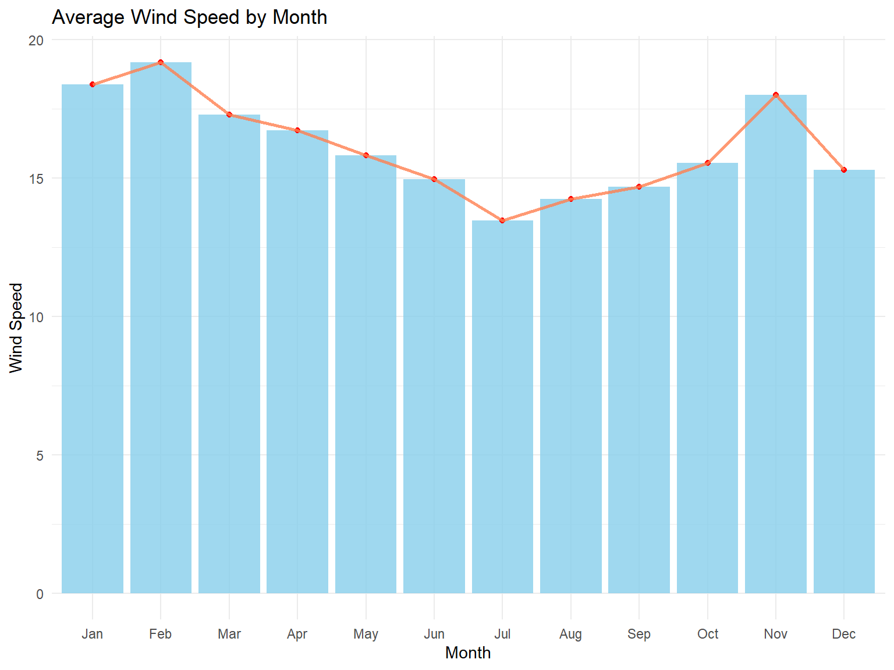
wind_speed_delaywind_speed_delay_month## `geom_smooth()` using formula = 'y ~ x'Wind Gust
# Plot average wind_gust by month in line plot
wind_gust_line =
ggplot(df_2013, aes(x = month, y = wind_gust)) +
geom_bar(aes(x=month, y=wind_gust),stat="summary", fun = 'mean', fill="skyblue", alpha = .8)+
geom_point(aes(x=month, y=wind_gust), stat = "summary", fun = "mean", color = "red") +
geom_line(aes(group = 1), stat="summary", fun = 'mean', color="coral", size=1, alpha = .8) +
labs(
title= "Average Wind Gust by Month",
x="Month",
y="Wind Gust")
# Plot wind_gust against arrival delay in a scatter plot
wind_gust_delay =
ggplot(df_2013, aes(x = wind_gust, y = arr_delay)) +
geom_point(alpha = 0.5, color = "skyblue") +
labs(title = "Scatter Plot of Wind Gust against Arrival Delay",
x = "Wind Gust",
y = "Arrival Delay (minutes)")
# Average wind_gust against average arr_delay by month
wind_gust_delay_month =
ggplot(df_2013_avg, aes(x = avg_wind_gust, y = avg_arr_delay, color = month)) +
geom_point(size = 3) +
geom_smooth(method = "lm", se = FALSE, color = "coral", size = 0.6) +
labs(title = "Scatter Plot of Average Wind Gust against Arrival Delay by Month",
x = "Avg Monthly Wind Gust",
y = "Avg Arrival Delay (minutes)")summary(df_2013$wind_gust)## Min. 1st Qu. Median Mean 3rd Qu. Max.
## 16.11 20.71 24.17 24.91 27.62 66.75wind_gust_line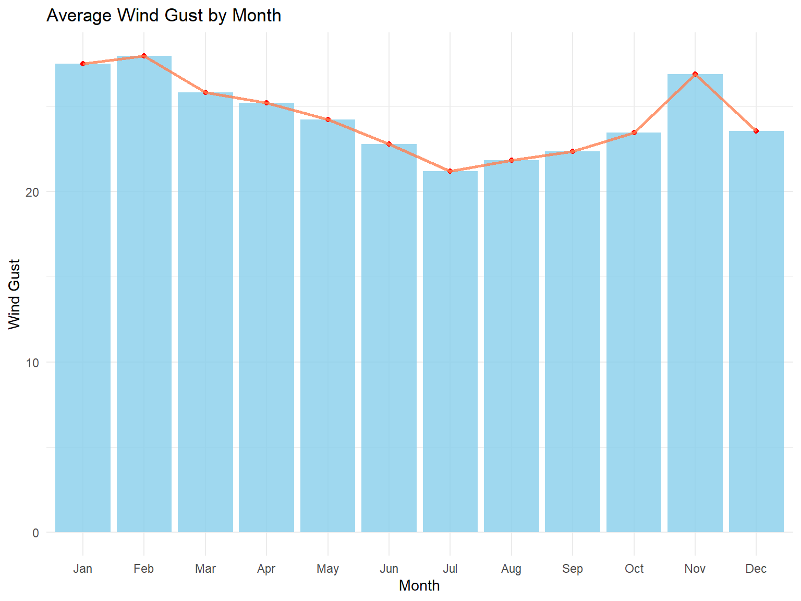
wind_gust_delay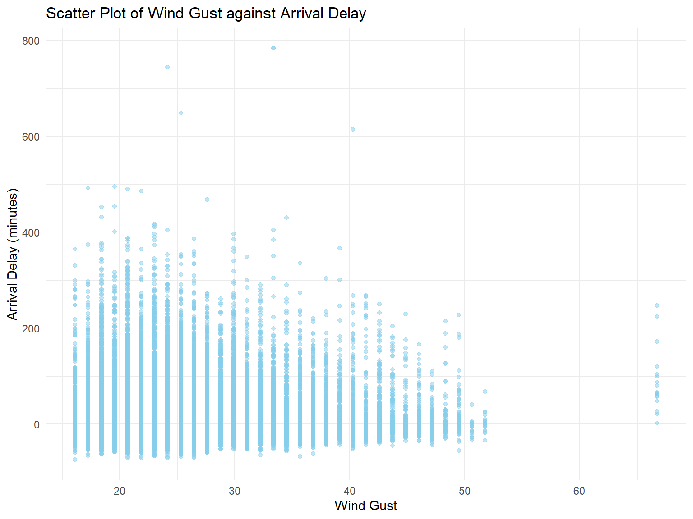
wind_gust_delay_month## `geom_smooth()` using formula = 'y ~ x'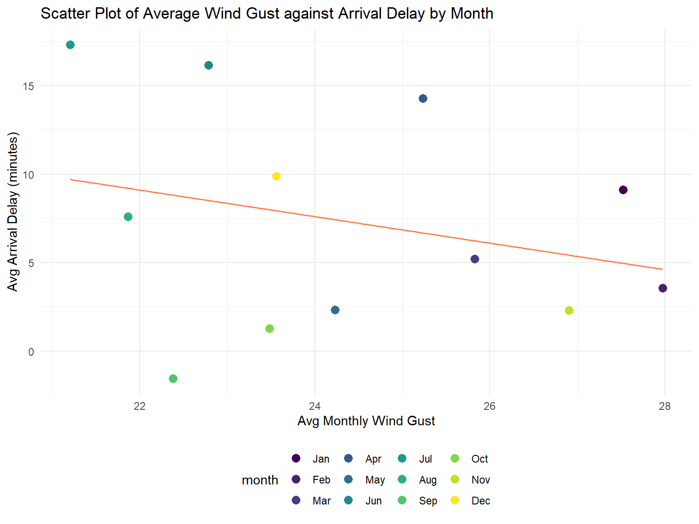
Flights
Arrival Delay Summary
summary(df_2013$arr_delay)## Min. 1st Qu. Median Mean 3rd Qu. Max.
## -74.000 -16.000 -4.000 7.287 14.000 783.000dd_hist =
ggplot(data = df_2013, aes(x = arr_delay)) +
geom_histogram(fill = 'skyblue', color = 'coral')+
labs(title = "Histogram of Arrival Delay",
x = "Arrival Delay (minutes)",
y = "Frequency")
dd_hist## `stat_bin()` using `bins = 30`. Pick better value with `binwidth`.Distance - Arrival Delay - Destination
The relationship between the distance and the average delay for each location.
df_2013_dest <-
df_2013 %>%
group_by(dest) %>%
summarize(
count = n(),
dist = mean(distance, na.rm = TRUE),
delay = mean(arr_delay, na.rm = TRUE)
)df_2013_dest## # A tibble: 104 × 4
## dest count dist delay
## <chr> <int> <dbl> <dbl>
## 1 ABQ 22 1826 8.32
## 2 ACK 29 199 -1.69
## 3 ALB 103 143 13.6
## 4 ANC 3 3370 -22.7
## 5 ATL 4043 757. 8.74
## 6 AUS 510 1513. 3.67
## 7 AVL 54 584. 11.2
## 8 BDL 100 116 7.75
## 9 BGR 80 378 4.86
## 10 BHM 60 866 19.7
## # ℹ 94 more rowsggplot(df_2013_dest, aes(dist, delay)) +
geom_point(aes(size = count, color = dist),alpha = 0.5) +
geom_smooth(color = 'skyblue') +
geom_jitter() +
scale_fill_brewer(palette = "Set3") +
labs(title = "Distance against Arrival Delay",
x = "Distance",
y = "Arrival Delay (minutes)")## `geom_smooth()` using method = 'loess' and formula = 'y ~ x'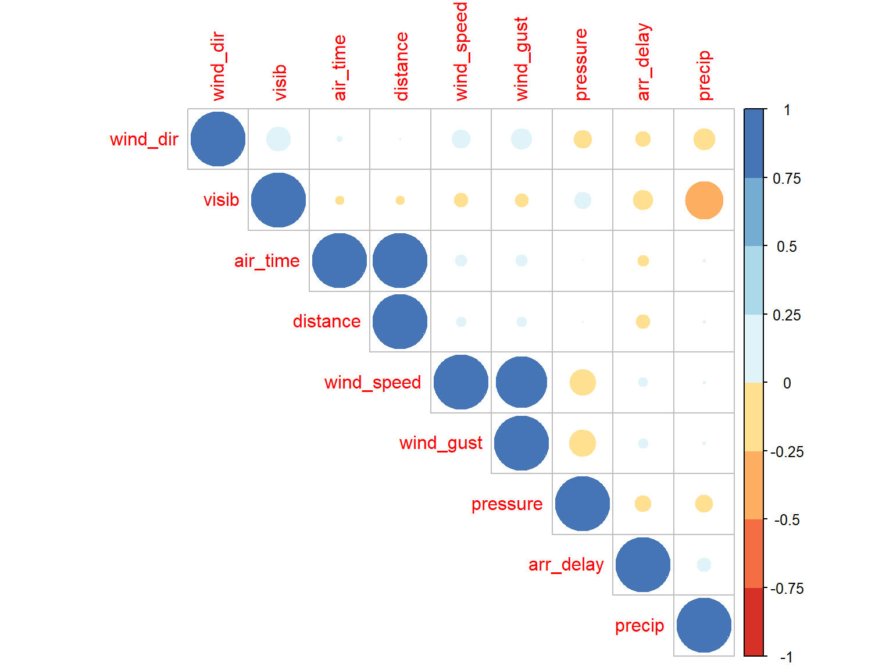
Flights tend to have more delays in short-medium distances. Long distance flights do not have as much delay.
Arrival delay by origins
df_2013 %>%
group_by(origin) %>%
summarise(mean_ad = mean(arr_delay), sd_ad = sd(arr_delay), IQR_ad = IQR(arr_delay), n = n()) %>%
arrange(desc(mean_ad))## # A tibble: 3 × 5
## origin mean_ad sd_ad IQR_ad n
## <chr> <dbl> <dbl> <dbl> <int>
## 1 EWR 9.27 43.8 32 28344
## 2 JFK 6.39 40.8 29 19212
## 3 LGA 5.74 42.1 29 25178# Plot violin plot of arr_delay against origin, coloring by origin
# reversing the order from high to low
delay_origin_box =
ggplot(df_2013, aes(x = reorder(origin, -arr_delay), y = arr_delay, fill = origin)) +
geom_boxplot(trim = FALSE, scale = "width", alpha = 0.7) +
labs(title = "Violin Plot of Arrival Delay by Origin",
x = "Origin",
y = "Arrival Delay (minutes)")
delay_origin_box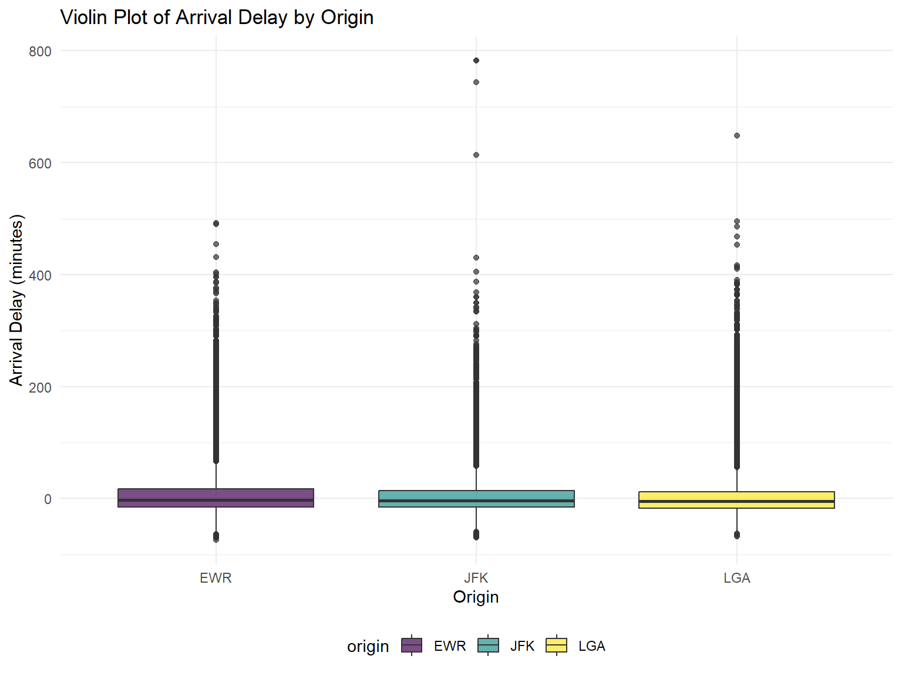
Arrival delay by Destination
df_2013 %>%
group_by(dest) %>%
summarise(mean_ad = mean(arr_delay), sd_ad = sd(arr_delay), IQR_ad = IQR(arr_delay), n = n()) %>%
arrange(desc(mean_ad))## # A tibble: 104 × 5
## dest mean_ad sd_ad IQR_ad n
## <chr> <dbl> <dbl> <dbl> <int>
## 1 TUL 47.5 74.9 84 46
## 2 OKC 33.1 53.3 67.8 60
## 3 CAE 27.6 46.8 32.5 27
## 4 TYS 27.5 52.6 70 102
## 5 DSM 24.7 57.8 55.8 86
## 6 GRR 21.7 54.3 41.8 194
## 7 CRW 21.5 46.9 52 49
## 8 GSP 21.4 49.5 55 183
## 9 SBN 20.5 41.7 29.5 2
## 10 JAC 20.3 20.5 18 3
## # ℹ 94 more rows# Calculate average arrival delay by destination
avg_arr_delay_by_dest <- df_2013 %>%
group_by(dest) %>%
summarize(avg_arr_delay_dest = mean(arr_delay, na.rm = TRUE)) %>%
arrange(desc(avg_arr_delay_dest)) %>%
head(10)
# Select only the top 6 destinations
top_destinations <- avg_arr_delay_by_dest$dest
# Filter the data for the top 6 destinations
filtered_data <- df_2013 %>% filter(dest %in% top_destinations)
# Create a boxplot for the top 6 destinations
top10_dest =
ggplot(filtered_data, aes(x = reorder(dest, -arr_delay), y = arr_delay, fill = dest)) +
geom_boxplot() +
scale_fill_brewer(palette = "Set3") +
labs(title = "Boxplot of Arrival Delay for Top 6 Destinations",
x = "Destination",
y = "Arrival Delay (minutes)")
top10_destArrival delay by carriers
df_2013 %>%
group_by(carrier) %>%
summarise(mean_ad = mean(arr_delay), sd_ad = sd(arr_delay), IQR_ad = IQR(arr_delay), n = n()) %>%
arrange(desc(mean_ad))## # A tibble: 16 × 5
## carrier mean_ad sd_ad IQR_ad n
## <chr> <dbl> <dbl> <dbl> <int>
## 1 F9 22.4 61.0 34 189
## 2 YV 21.4 57.1 54.8 158
## 3 FL 16.7 47.5 28 823
## 4 EV 16.7 48.1 41 12310
## 5 MQ 10.8 41.0 29 5999
## 6 B6 10.1 40.3 30 10040
## 7 OO 10 26.6 35 5
## 8 WN 8.69 43.7 30 3008
## 9 9E 8.29 45.5 34 3395
## 10 UA 3.59 39.8 28 13580
## 11 US 2.31 33.5 23 4629
## 12 AA 1.45 43.0 30 7060
## 13 DL 1.27 39.2 26 10388
## 14 VX 1.13 44.6 28 965
## 15 AS -5.63 41.2 29 121
## 16 HA -8.22 36.1 35.5 64# Plot violin plot of arr_delay against carrier, coloring by carrier
# reversing the order from high to low
delay_carrier_box =
ggplot(df_2013, aes(x = reorder(carrier, -arr_delay), y = arr_delay, fill = carrier)) +
geom_violin(trim = FALSE, scale = "width", alpha = 0.7) +
labs(title = "Violin Plot of Arrival Delay by Carrier",
x = "Carrier",
y = "Arrival Delay (minutes)")
delay_carrier_box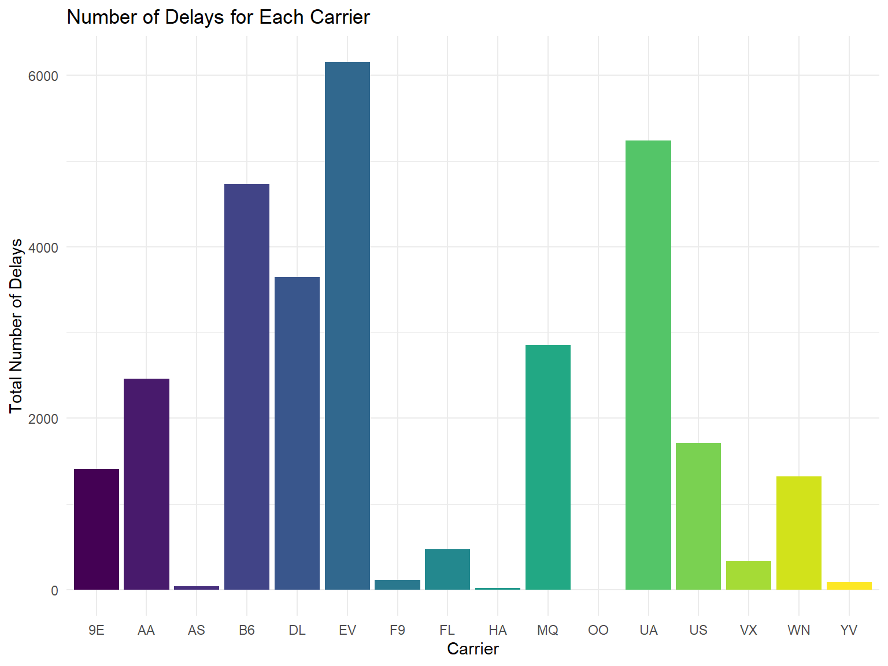
Arrival Delay by Month
df_2013 %>%
group_by(month) %>%
summarise(mean_ad = mean(arr_delay), sd_ad = sd(arr_delay), IQR_ad = IQR(arr_delay), n = n()) %>%
arrange(desc(mean_ad))## # A tibble: 12 × 5
## month mean_ad sd_ad IQR_ad n
## <fct> <dbl> <dbl> <dbl> <int>
## 1 Jul 17.3 58.8 43 4053
## 2 Jun 16.1 53.6 40 6465
## 3 Apr 14.3 48.4 35 8496
## 4 Dec 9.89 37.4 27.2 3828
## 5 Jan 9.12 40.9 30 6417
## 6 Aug 7.60 38.5 31 3726
## 7 Mar 5.20 40.5 29 10399
## 8 Feb 3.56 36.8 27 6925
## 9 May 2.32 42.5 30 5228
## 10 Nov 2.31 31.0 25 8202
## 11 Oct 1.27 33.7 24 4812
## 12 Sep -1.56 35.6 25 4183# Plot violin plot of arr_delay against month, coloring by month
# reversing the order from high to low
delay_month_box =
ggplot(df_2013, aes(x = reorder(month, -arr_delay), y = arr_delay, fill = month)) +
geom_violin(trim = FALSE, scale = "width", alpha = 0.7) +
labs(title = "Violin Plot of Arrival Delay by Month",
x = "Month",
y = "Arrival Delay (minutes)")
delay_month_box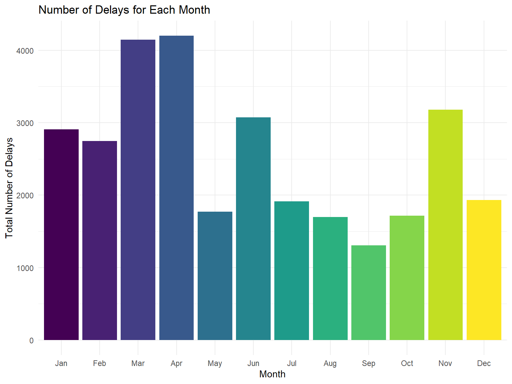
Flight
Tailnum
flights_delay <-
df_2013 %>%
group_by(tailnum) %>%
summarize(
count = n(),
avg_delay = mean(arr_delay)
)flights_delay## # A tibble: 3,737 × 3
## tailnum count avg_delay
## <chr> <int> <dbl>
## 1 D942DN 2 16.5
## 2 N0EGMQ 79 12.4
## 3 N10156 39 7.56
## 4 N102UW 8 27.8
## 5 N103US 7 -5.86
## 6 N104UW 3 -19.7
## 7 N10575 75 26.0
## 8 N105UW 12 -9.08
## 9 N107US 7 12.9
## 10 N108UW 11 7.82
## # ℹ 3,727 more rowsggplot(flights_delay, aes(avg_delay)) +
geom_freqpoly(color = 'skyblue') +
labs(title = "Distribution of Average Arrival Delay by Flight",
x = "Average Arrival Delay"
)## `stat_bin()` using `bins = 30`. Pick better value with `binwidth`.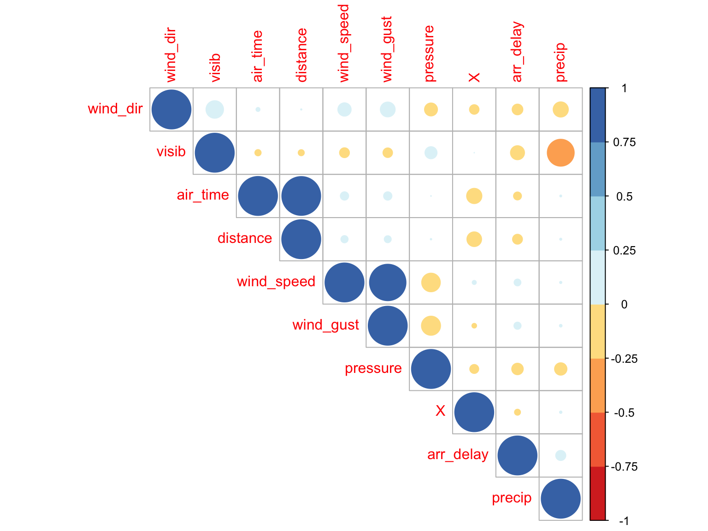
max_delay <-
flights_delay %>%
arrange(-avg_delay)
max_delay## # A tibble: 3,737 × 3
## tailnum count avg_delay
## <chr> <int> <dbl>
## 1 N305AS 1 196
## 2 N933LR 2 176.
## 3 N621SW 1 175
## 4 N635AA 5 161.
## 5 N136DL 1 146
## 6 N610WN 1 141
## 7 N540US 2 140.
## 8 N299AT 1 139
## 9 N938LR 1 128
## 10 N354AT 3 116.
## # ℹ 3,727 more rowsN305AS had an average delay of 196 minutes, which is about 3 hours.
On time arrival rate for NYC airports
Suppose a flight that is delayed for less than 5 minutes is basically “on time”. Assume we onsider any flight delayed for 5 minutes of more to be “delayed”
df_2013 <-
df_2013 %>%
mutate(
ontime = arr_delay < 5
)
df_2013 <-
df_2013 %>%
mutate(
arr_type = ifelse(arr_delay < 5, "on time", "delayed")
)
df_2013 %>%
group_by(origin) %>%
summarise(ontime_prop = sum(ontime == TRUE) / n()) %>%
arrange(desc(ontime_prop))## # A tibble: 3 × 2
## origin ontime_prop
## <chr> <dbl>
## 1 LGA 0.661
## 2 JFK 0.636
## 3 EWR 0.625ggplot(data = df_2013, aes(x = origin, fill = arr_type)) +
geom_bar()+
scale_fill_brewer(palette = "Set3") +
labs(title = "Bar Plot of On-time Arrival for NYC Airports",
x = "Origin",
y = "Count of on-time arrival")
The plot shows that LGA airport has the best on time arrival rate and EWR airport has the worst.
Average Speed for flight (air_time & distance)
We set average speed = distance / (air_time/60) in miles/hr.
df_2013 <-
df_2013 %>%
mutate(
avg_speed = distance / (air_time/60)
)
ggplot(data = df_2013, aes(x = distance, y = avg_speed, color = avg_speed)) +
geom_point(alpha = .6) +
scale_fill_brewer(palette = "Set3") +
labs(title = "Scatter Plot of Average Flight Speed against Distance",
x = "Distance",
y = "Average Flight Speed")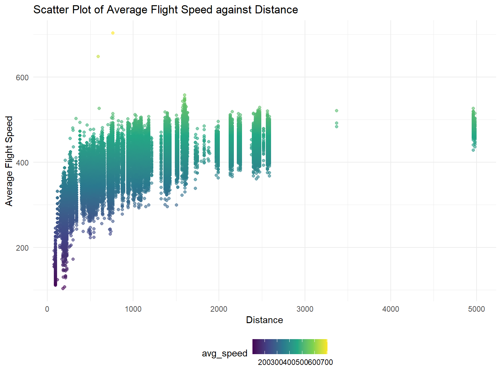
ggplot(data = df_2013, aes(x = avg_speed, y = arr_delay, color = avg_speed)) +
geom_point(alpha = .4) +
scale_fill_brewer(palette = "Set3") +
geom_smooth(method = "lm", se = FALSE, color = "coral", size = 0.6) +
labs(title = "Scatter Plot of Average Flight Speed against Arrival Delay",
x = "Average Flight Speed",
y = "Arrival Delay (minutes)")## `geom_smooth()` using formula = 'y ~ x'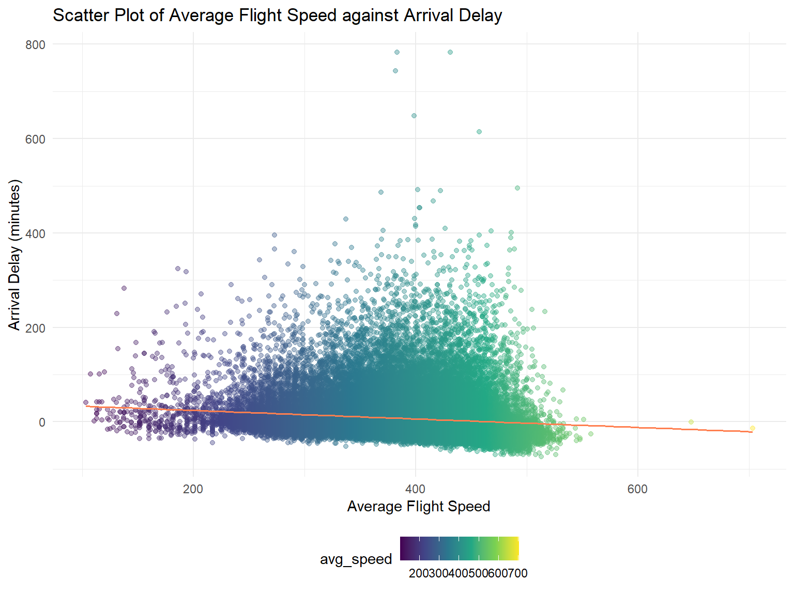